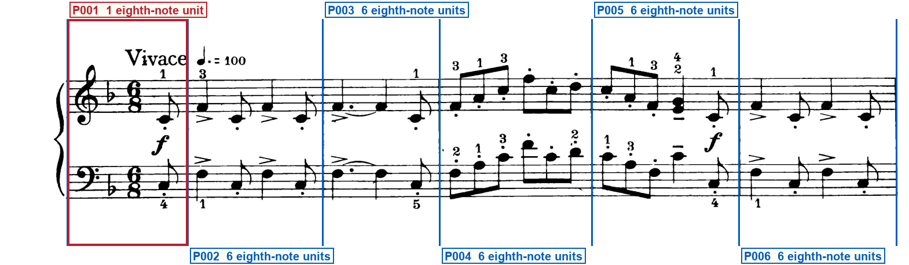
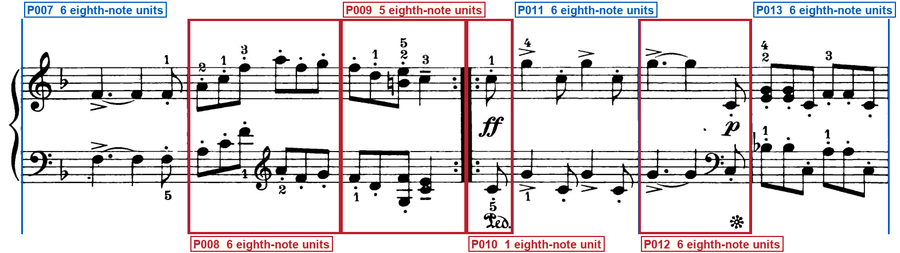
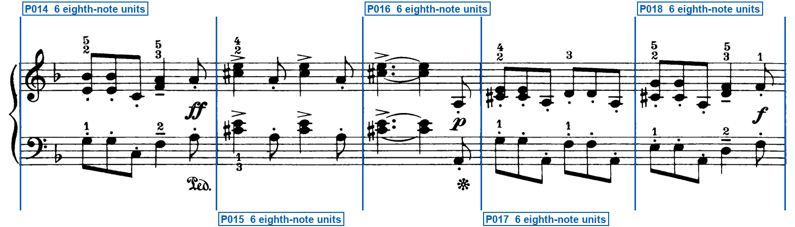
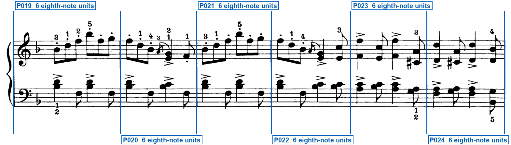
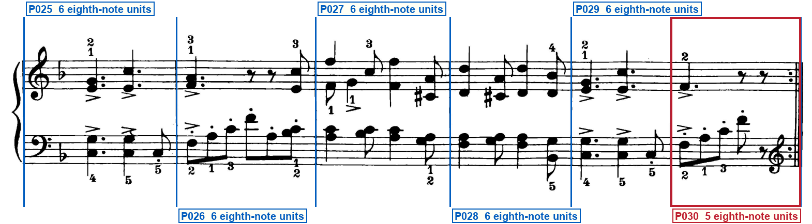

Printed-frame check
schumann_op68_07_hunting_song
Blue regions are silent: verify that they are ordinary bars. Red regions have one compact label directly below their system. Blue vertical lines must sit on printed barlines. Labels must remain outside the music.
System 1 — 6 printed regions

- P001 — OPENING SIGNATURE · PICKUP — Left of the first note, after the clefs · After the 6/8, one staccato eighth on both staves
System 2 — 7 printed regions

- P008 — CLEF CHANGE — After the third left-hand eighth note · staff 2: bass clef → treble clef; glyph After the third left-hand eighth of P008, immediately left of the remaining three left-hand eighths; effective P008; first governed event: The left-hand treble A4 eighth immediately after the G clef
- P009 — PARTIAL BAR · COMBINED REPEAT — Three beamed eighths then one quarter, no sixth unit · At the right barline
- P010 — PICKUP · REPEAT START — One staccato eighth after the forward dots · Immediately after the left double bar
- P012 — CLEF CHANGE — Immediately left of the last left-hand eighth note · staff 2: treble clef → bass clef; glyph On the last eighth of P012, immediately left of the staccato C3 and the barline at x=1310; effective P012; first governed event: The left-hand staccato C3 eighth in the second space of the bass staff, no ledger
System 3 — 5 printed regions

System 4 — 6 printed regions

System 5 — 6 printed regions

- P030 — PARTIAL BAR · REPEAT END · CAUTIONARY CLEF · CLEF CHANGE · FINAL BARLINE — Accented quarter, quarter rest, and eighth rest on the upper staff · Immediately left of the thin-plus-thick close · After the left-hand eighth rest · Left of the backward-repeat dots · At the right barline · staff 2: bass clef → treble clef; glyph After the left-hand eighth rest of P030, immediately left of the backward-repeat dots and the thin-plus-thick close; effective P010; first governed event: No later linear note; after the backward repeat, the left-hand staccato C of P010
Full clef inventory
Both staves open in treble and bass. Three later printed clefs on the lower staff: treble mid-P008 after three bass eighths, bass on the last eighth of P012, and a cautionary treble at the close of P030. System-start G and F reprints on systems 2 through 5 are not changes.
Opening clefs
- Staff 1: treble clef — Opening of system 1, upper staff
- Staff 2: bass clef — Opening of system 1, lower staff
Printed clef changes (3)
- P008, staff 2: treble clef — P008, staff 2: bass clef to treble clef after the first three left-hand eighths
- P012, staff 2: bass clef — P012, staff 2: treble clef to bass clef on the last left-hand eighth
- P030, staff 2: treble clef — P030, staff 2: cautionary bass clef to treble clef at the close, left of the backward-repeat dots
Verifier notes and special checks
The print has 30 physical regions on one page in five systems (six, seven, five, six, six). Printed meter is 6/8 with one flat and no later meter or key change. System 1 opens with a one-eighth-note pickup. System 2 has a mid-bar left-hand change to treble, a five-eighth-note first-strain close into a combined repeat, a one-eighth-note second-strain pickup after the forward dots, and a left-hand change to bass on the last eighth of the twelfth region. Systems 3 and 4 are ordinary complete 6/8 bars. System 5 ends with a five-eighth-note close, a cautionary left-hand treble immediately before backward-repeat dots, and a thin-plus-thick final barline. No sixth eighth-note unit is printed in either short close, and no rest is invented. Returned barline geometry matches the proposed lock.
- System 2 after the combined repeat: Is there a visible staff-spanning barline after the one-eighth pickup? Yes. The staccato C under ff is closed by the staff-spanning barline at x=894.
- System 2 P009: Is a sixth eighth-note unit printed before the backward-repeat dots? No. Each staff has three beamed eighths then one quarter. No sixth eighth, rest, or dot is printed.
- System 2 P009/P010 barline: Is the P009/P010 barline a combined repeat? Yes. Backward dots sit left of the thick columns and matching forward dots sit right of them, immediately left of the P010 ff. No volta.
- System 5 P030: Is a sixth eighth-note unit printed before the final barline? No. The upper staff has an accented quarter, a quarter rest, and an eighth rest only. No rest is invented.
- System 5 P030 lower staff: Does the G clef before the close govern a later sounding note of this region? No. It sits after the left-hand eighth rest, immediately left of the backward-repeat dots. Cautionary only.
Your verification checks
- Do all staves, notes, rests, slurs and other musical marks fit completely inside the page?Expected: Yes
- Do the blue lines match every printed barline, giving 30 printed regions?Expected: Yes
- Do the compact red labels state every visible repeat, ending, route mark, special barline, partial, meter/key change and clef change—and are all unlabeled blue regions truly normal?Expected: Yes
- Are all region labels outside the printed system, with no ending, repeat, clef, note or mark hidden?Expected: Yes
- Does the clef list state each opening clef and every visible clef change?Expected: Yes
Approve only after every answer is Yes. Tell the Orchestrator: Frame approved or Frame rejected with the system number.